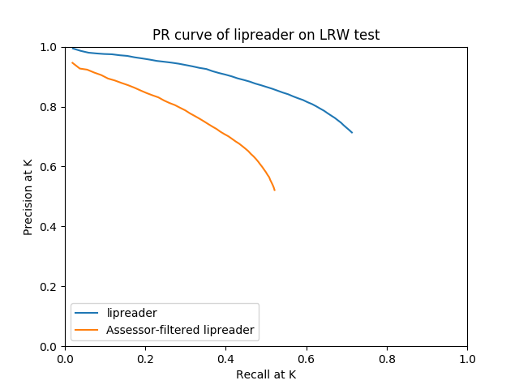

2017-11-11

Figure 1: Lipreader Precision @ K vs Recall @ K curve, averaged across words, till K=50 (max 50 documents per word); compared with those of Logistic Regressor assessor
Clearly assessor is bad.
SUMMARY
Compared PR curves for lipreader results and critic-filtered results
- Compared precision @ K till 50 for every word, averaged across words
- Compared recall @ K till 50 for every word, averaged across words
- Clearly assessor is not good
Head pose extraction from LRW using https://github.com/voletiv/gazr
- Uses dlib shape predictor
- Too slow - 1.5-2 hours per word set (1100*~9 images)
- Tried [https://github.com/guozhongluo/head-pose-estimation-and-face-landmark], requires caffe
- Installed caffe - didn't work
Using https://github.com/voletiv/deepgaze
- Uses CNN trained to detect pose
- Much faster - 30mins per word set
- Extracted head pose from LRW
Used Abhishek's lipreader for Dense and Softmax outputs
- Samples were not saved in order, not usable for critic
- Was saved in multi-GPU architecture, could not load model in single-GPU mode
- Saved and loaded model in single-GPU mode
- Extracting Dense and Softmax outputs
Training LSTM lipreader